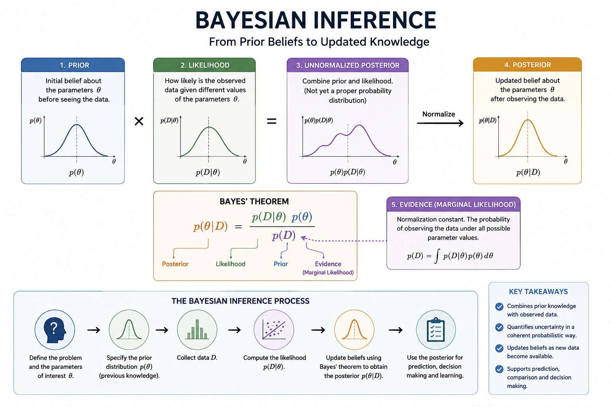

Introduction
There are two principal paradigms in statistical machine learning: frequentist (classical) methods and Bayesian methods. These approaches differ primarily in their interpretation of probability and the treatment of unknown model parameters.
In the frequentist framework, probabilities are interpreted as long-run frequencies of events observed over repeated sampling. Model parameters are assumed to be fixed but unknown quantities, and statistical inference is based solely on the information contained in the observed data.
In contrast, Bayesian inference interprets probability as a measure of subjective belief or uncertainty about an event or parameter. Rather than treating the model parameter as fixed, the Bayesian approach considers it to be a random variable. Prior knowledge or beliefs about the unknown parameter \(\theta\) are expressed through a prior distribution, denoted by \(\pi(\theta)\). Once the observed data (x) become available, these prior beliefs are updated using Bayes' theorem, resulting in the posterior distribution of \(\theta\) given the data. The posterior distribution combines the prior information with the evidence provided by the observed data and forms the basis for Bayesian inference.
In this article, I’ll walk through a practical example illustrating how Bayesian inference can be applied in real-world problems, such as estimating the probability of a treatment’s success rate in a clinical trial or assessing the likelihood of default in a financial risk model.
Bayesian inference procedure
Let \(x_1, ...,x_n\) be n observations sampled from a probability density \(p(x | \theta)\). We write \(p(x | \theta)\) if we view \(\theta\) as a random variable and \(p(x | \theta)\) represents the conditional probability density of x conditioned on \(\theta\). In contrast, we write \(p_{\theta}(x)\) if \(\theta\) is viewed as a deterministic value. We can write:
\begin{aligned} p(\theta|x) &=\frac{p(x,\theta)}{p(x)} \\ &= \frac{p(x|\theta)p(\theta)}{\int p(x|\theta)p(\theta)d\theta}\\ &= \frac{p(x|\theta)\pi(\theta)}{\int p(x|\theta)\pi(\theta)d\theta} \ \ \text{car \(p(\theta)= \pi(\theta)\)} \\ &\propto p(x|\theta)\pi(\theta) \end{aligned} where \(p(x \mid \theta)\) is the likelihood function, \(\pi(\theta)\) is the prior distribution, and \(p(\theta|x)\) is the posterior distribution, sometimes denoted by \(\pi(\theta \mid x)\). The denominator, often called the marginal likelihood or evidence, serves as a normalizing constant that ensures the posterior distribution integrates to one. By this, the posterior probability is proportional to the prior times the likelihood: \begin{equation} p(\theta \mid x_1,\dots,x_n) \propto \mathcal{L}_n(\theta)\pi(\theta) \end{equation} where \(\mathcal{L}_n(\theta) = \prod_{i=1}^{n}p(x_i|\theta)\) where \(\mathcal{L}_n\) is the likelihood function on the dataset \(\{x_1,\dots,x_n\}\).This deceptively simple formula underpins a vast range of statistical models and machine learning algorithms - from linear regression to deep learning. The Bayesian approach allows incorporating expert knowledge and quantifying uncertainty directly in model parameters.
Bayesian procedure
- choosing a probability density \(\pi(\theta)\) for the prior distribution that expresses our beliefs about a parameter before seeing any data.
- choosing a statistical model \(p(x | \theta)\) that reflects our beliefs about x given \(\theta\).
- After observing data \(\mathcal{D}_n = \{x_1, . . . ,x_n\}\), we update our beliefs and calculate the posterior distribution \(p(\theta | \mathcal{D}_n)\).
“The Bayesian method is the logic of science - it’s the way rational beings should reason when faced with uncertainty.” - E.T. Jaynes
Example: Suppose that \(x|\theta \sim\mathcal{N}(\mu, \sigma^2)\). If in addition we suppose that \(\sigma\) is known and constant, then \(\theta=\mu\). Considering \(\mu\sim \mathcal{N}(\nu,\tau^2)\), let's determine \(p(\mu|x)\). \begin{aligned} p(\mu|x) &\propto p(x|\theta)\pi(\mu) \\ &\propto \exp\Big\{-\frac{1}{2\sigma^2}(x-\mu)^2\} \exp\{-\frac{1}{2\tau^2}(\mu-\nu)^2\Big\} \\ &= \exp\Big\{-\frac{1}{2\sigma^2}(x-\mu)^2 -\frac{1}{2\tau^2}(\mu-\nu)^2\Big\}\\ &= \exp\Big\{-\frac{1}{2\sigma^2}(x^2-2x\mu+\mu^2) -\frac{1}{2\tau^2}(\mu^2-2\nu\mu +\nu^2)\Big\}\\ &= \exp\Big\{-\frac{1}{2\sigma^2}x^2+\frac{1}{\sigma^2}x\mu-\frac{1}{2\sigma^2}\mu^2 -\frac{1}{2\tau^2}\mu^2-\frac{1}{2\tau^2}\nu\mu -\frac{1}{2\tau^2}\nu^2\Big\}\\ &= \exp\Big\{-\frac{1}{2}(\frac{1}{\sigma^2}+\frac{1}{\tau^2})\mu^2 + (\frac{x}{\sigma^2}+\frac{\nu}{\tau^2})\mu -\frac{x^2}{2\sigma^2} -\frac{\nu^2}{2\tau^2}\Big\}\\ &\propto \exp\Big\{-\frac{1}{2}(\frac{1}{\sigma^2}+\frac{1}{\tau^2})\mu^2 + (\frac{x}{\sigma^2}+\frac{\nu}{\tau^2})\mu \Big\}\\ &= \exp\Big\{-\frac{1}{2}(\frac{1}{\sigma^2}+\frac{1}{\tau^2})\Big[\mu^2 -(\frac{1}{\sigma^2}+\frac{1}{\tau^2})^{-1}(\frac{x}{\sigma^2}+\frac{\nu}{\tau^2})\mu\Big] \Big\}\\ &\propto \exp\Big\{-\frac{1}{2}(\frac{1}{\sigma^2}+\frac{1}{\tau^2})\Big[\mu -(\frac{1}{\sigma^2}+\frac{1}{\tau^2})^{-1}(\frac{x}{\sigma^2}+\frac{\nu}{\tau^2})\Big]^2 \Big\} \end{aligned} In this case, the posterior distribution \(p(\mu|x)\) is also normal with mean \((\frac{1}{\sigma^2}+\frac{1}{\tau^2})^{-1}(\frac{x}{\sigma^2}+\frac{\nu}{\tau^2})\) and variance \((\frac{1}{\sigma^2}+\frac{1}{\tau^2})^{-1}\).
The above result can be easily extented to a random sample \(x_1,...,x_n\) of size \(n\) from \(p(x|\theta)\) with known variance \(\sigma^2\) as follow: \begin{aligned} \mathcal{L}(\mu) &\propto \exp\Big\{-\frac{n}{2\sigma^2}(\mu-\bar{x})^2 \Big\} \ \text{and} \\ \mu|x_{1:n}&\sim \mathcal{N}\Big((\frac{n}{\sigma^2}+\frac{1}{\tau^2})^{-1}(\frac{n\bar{x}}{\sigma^2}+\frac{\nu}{\tau^2}), \ (\frac{n}{\sigma^2}+\frac{1}{\tau^2})\Big). \end{aligned} where \(\bar{x}=\frac{1}{n}\Sigma_{i=1}^{n}x_i\)
2. Practical Applications
Bayesian inference has applications across many fields because it provides a principled framework for updating uncertainty about unknown quantities when new evidence becomes available. Here are some of the most important applications.
- In healthcare, Bayesian models help combine evidence from multiple clinical studies.
- In finance, they assist in risk assessment and portfolio optimization.
- In machine learning, they power probabilistic models such as Gaussian processes and Bayesian neural networks.
- In Time series and forecasting, Bayesian models are particularly useful when observations arrive sequentially.
- In Natural language processing (NPL), Bayesian models have historically played an important role in NLP. Examples include Naive Bayes text classification, Bayesian topic models, latent Dirichlet allocation (LDA) and probabilistic language models.
The central strength of Bayesian inference is therefore not simply that it provides parameter estimates, but that it provides a complete probabilistic representation of uncertainty, which can subsequently be used for prediction, comparison, and decision-making. Morever, by applying Bayesian reasoning, we can better interpret complex data, avoid overfitting, and make informed predictions with uncertainty estimates.
The main characteristics of Bayesian inference are summarized in the following figure.

The key advantage of the Bayesian perspective is its flexibility and interpretability - enabling a more complete understanding of data and model behavior.
← Back to Blog